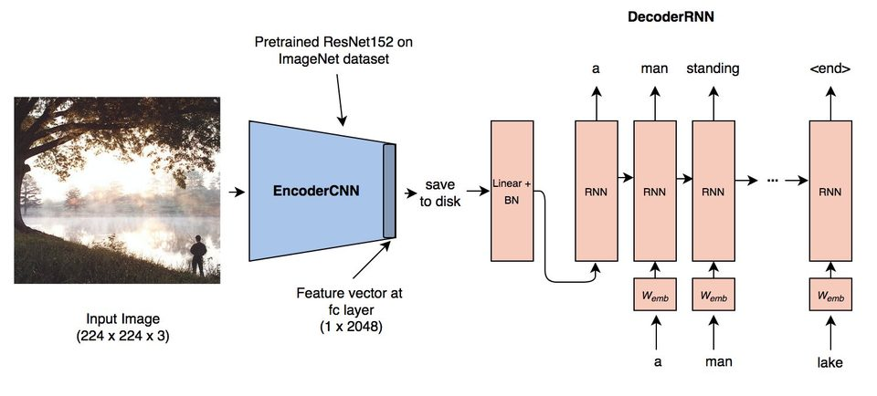
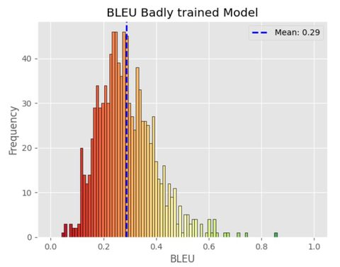
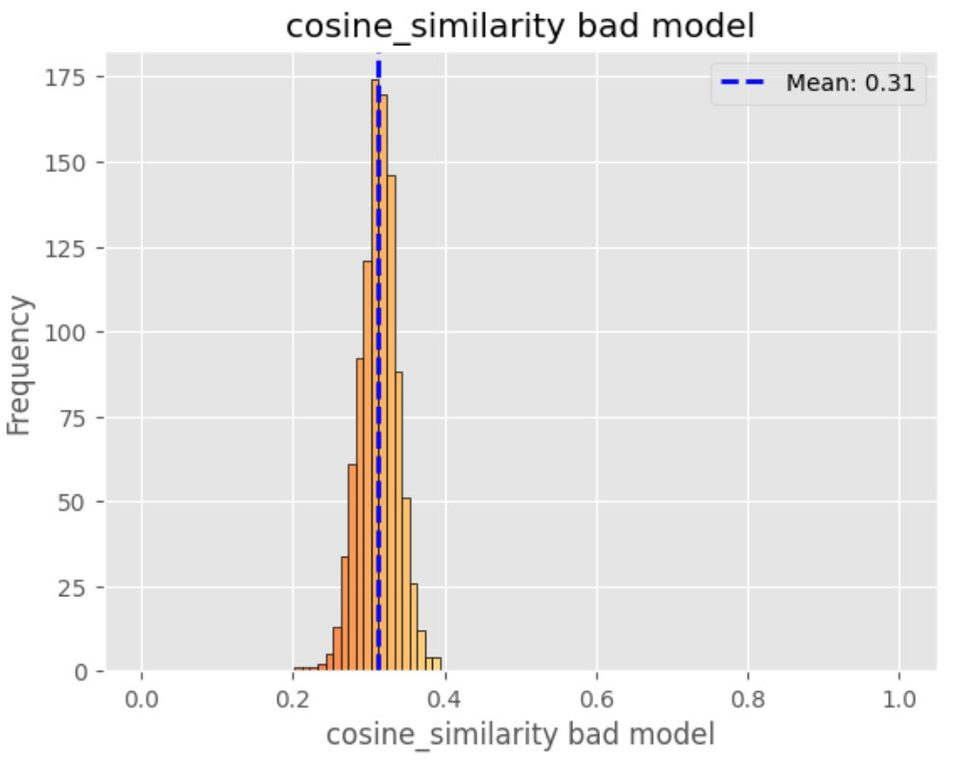
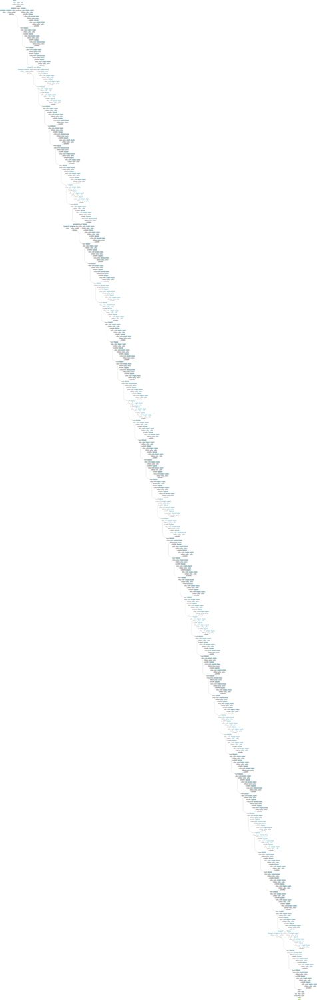

Assessment
Caption generation
The project combined pretrained visual features with a trainable decoder to generate natural-language captions for images.
OCOM5203M / Deep Learning
My final assessment built an image-captioning system in PyTorch: a ResNet-style visual encoder, a sequence decoder, tokenisation, dataloaders, training loops, logging, evaluation and the awkward business of deciding whether a generated caption is any good.
The module connected classic CNNs, backpropagation, optimisation, regularisation, sequence models and evaluation metrics with the practical grind of tensor shapes, checkpoints and debugging.

Assessment
The project combined pretrained visual features with a trainable decoder to generate natural-language captions for images.
Implementation
I built datasets, dataloaders, model components, training loops, logging and checkpoint handling rather than treating the model as a black box.
Evaluation
BLEU and cosine similarity helped compare outputs, but the assessment made clear that caption quality is not reducible to one clean number.
Lesson
Deep learning work is often less about one clever layer and more about data representation, tensor discipline and knowing where to inspect the pipeline.


